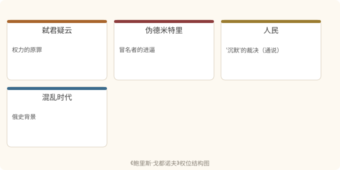

鲍里斯·戈都诺夫
一、基本信息
| 作者 | 普希金 |
|---|---|
| 成书/出版 | 1831年（作者页 B143 口径：鲍里斯·戈都诺夫（1831）） Aleksandr Pushkin — Encyclopaedia Britannica（百科全书） |
| 国别/地区 | 俄国 |
| 时代 | 近代 · 19世纪 |
| 体裁 | 诗剧 |
| 语言 | 俄语 |

《鲍里斯·戈都诺夫》权位结构图（主题·结构图）
二、创作背景
作者页（B143）：普希金 major_works 载'鲍里斯·戈都诺夫（1831）、青铜骑士'（B143 作者页定位，详见 aonijin 条核对）。
题材（通说待核）：1598—1605年摄政王戈都诺夫弑君疑云——伪德米特里的历史剧。
三、内容脉络
权位的诅咒：'人民的沉默'（结尾句通说待核）。
伪德米特里的进逼（通说待核）。
四、主要人物表
| 人物 | 身份 | 说明 |
|---|---|---|
| 戈都诺夫 | 摄政王→沙皇 | 弑君疑云（通说待核） |
| 伪德米特里 | 冒名者 | （通说待核） |
五、主题与艺术特点
- 历史剧的人民观（通说）。
- '人民的沉默'（结尾通说待核）。
- 穆索尔斯基同名歌剧（1869/1874——通说待核）。
六、影响与评论
- 作者页：普希金戏剧代表作（B143 作者页口径）。
Aleksandr Pushkin — Encyclopaedia Britannica（百科全书） - 作者页：普希金俄国文学之父定位（B143 作者级）。
Aleksandr Pushkin — Encyclopaedia Britannica（百科全书）
七、阅读建议
难点
- 俄史'混乱时代'。
- 诗剧的不分行体。
- 《鲍里斯·戈都诺夫》（人民文学出版社《普希金全集》，通说待核）。
- 俄文原版（公有领域）。
普希金戏剧首选。
八、待核实
- 1825年写成、1831年出版核对。
- 戈都诺夫/伪德米特里人名核对。
- 穆索尔斯基歌剧年份待核。
本页主要来源
普希金的其他收录作品：叶甫盖尼·奥涅金